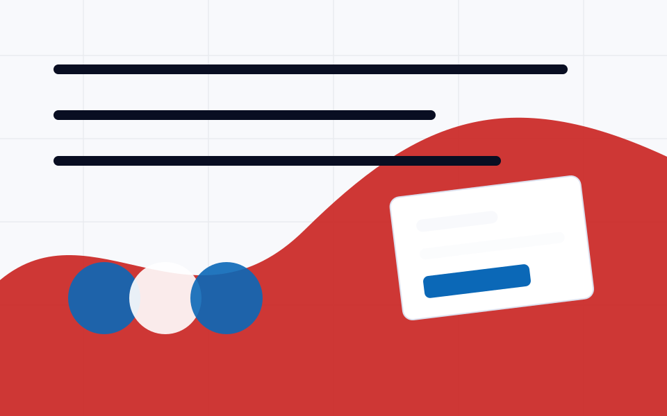

Standalone tool
Fidelity
Build or verify a block or page to measured fidelity against a Figma frame, a reference URL, or an image — an iterative fix loop gated by a deterministic tolerance check, never a model-judged score.

3 skills
Fidelity command list
Fidelity
/twt-fidelity
v1.0.3
Build a block or page to measured fidelity against a Figma frame, a reference URL, or an image.
Token usage
High
inputs yes · reads 3 · writes 2
View details
Fidelity Fetch
/twt-fidelity-fetch
v1.0.2
Acquire a reference — Figma frame, live URL, or image — as a measured reference-spec.
Token usage
Mid
inputs yes · reads 1 · writes 4
View details
Fidelity Measure
/twt-fidelity-measure
v1.0.1
Measure a built page against the reference spec and report every delta.
Token usage
Mid
inputs yes · reads 4 · writes 10
View details